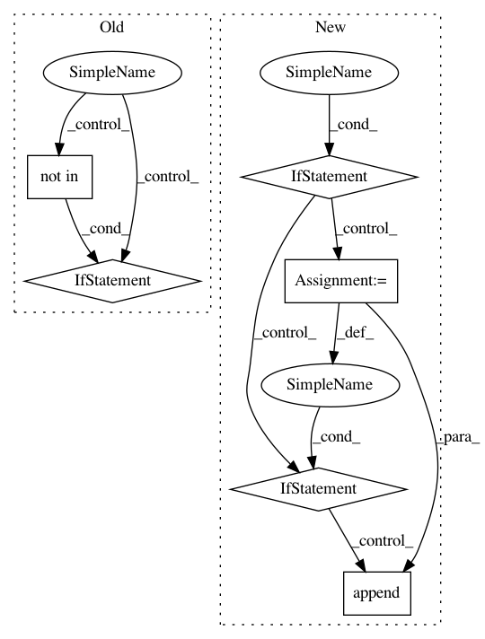

903cda08b153400849409c253cbc8051af53a503,homeassistant/components/switch/insteon_local.py,,setup_platform,#Any#Any#Any#Any#,26
Before Change
insteonhub = hass.data["insteon_local"]
conf_switches = load_json(hass.config.path(INSTEON_LOCAL_SWITCH_CONF))
if conf_switches:
for device_id in conf_switches:
setup_switch(
device_id, conf_switches[device_id], insteonhub, hass,
add_devices)
else:
linked = insteonhub.get_linked()
for device_id in linked:
if linked[device_id]["cat_type"] == "switch"\
and device_id not in conf_switches:
request_configuration(device_id, insteonhub,
linked[device_id]["model_name"] + " " +
linked[device_id]["sku"],
hass, add_devices)
def request_configuration(
device_id, insteonhub, model, hass, add_devices_callback):
Request configuration steps from the user.
configurator = hass.components.configurator
After Change
def setup_platform(hass, config, add_devices, discovery_info=None):
Set up the Insteon local switch platform.
insteonhub = hass.data["insteon_local"]
if discovery_info is None:
return
linked = discovery_info["linked"]
device_list = []
for device_id in linked:
if linked[device_id]["cat_type"] == "switch":
device = insteonhub.switch(device_id)
device_list.append(
InsteonLocalSwitchDevice(device)
)
add_devices(device_list)
class InsteonLocalSwitchDevice(SwitchDevice):
In pattern: SUPERPATTERN
Frequency: 4
Non-data size: 6
Instances
Project Name: home-assistant/home-assistant
Commit Name: 903cda08b153400849409c253cbc8051af53a503
Time: 2018-01-08
Author: cameron.b.llewellyn@gmail.com
File Name: homeassistant/components/switch/insteon_local.py
Class Name:
Method Name: setup_platform
Project Name: home-assistant/home-assistant
Commit Name: 8703124c760df303d29571aa975a72cc4f868f09
Time: 2018-01-17
Author: pierre.staahl@gmail.com
File Name: homeassistant/components/media_player/yamaha.py
Class Name:
Method Name: setup_platform
Project Name: pantsbuild/pants
Commit Name: 019b8852ac95bf8533d6a9938d69a138091e2a61
Time: 2013-02-04
Author: benjy@foursquare.com
File Name: src/python/twitter/pants/tasks/jvm_task.py
Class Name: JvmTask
Method Name: classpath
Project Name: home-assistant/home-assistant
Commit Name: 903cda08b153400849409c253cbc8051af53a503
Time: 2018-01-08
Author: cameron.b.llewellyn@gmail.com
File Name: homeassistant/components/light/insteon_local.py
Class Name:
Method Name: setup_platform